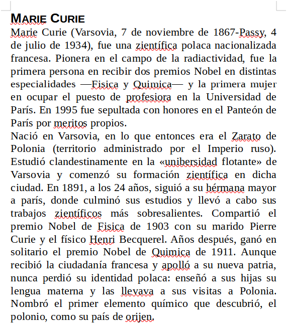
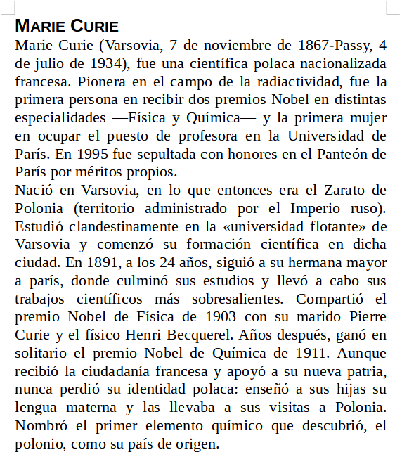

14. Corrección ortográfica¶
En este ejercicio veremos las herramientas de corrección automática de la ortografía del texto que nos va a ayudar a detectar y corregir las faltas de ortografía.
Primero descargamos y abrimos con LibreOffice Writer la práctica de ejemplo.
Al abrir el archivo anterior nos encontraremos con la siguiente ventana en LibreOffice Writer.
En el texto podemos ver muchas faltas de ortografía señaladas con líneas de subrayado rojo debajo de cada palabra incorrecta. También hay palabras que están escritas de forma correcta, pero en otro idioma, por lo que se señalan en rojo (Marie, Passy, Zarato, Henri) al no encontrarse en el diccionario español.
Para poder ver las palabras incorrectas con el subrayado rojo debajo de cada una, es necesario activar la opción que se encuentra en el menú
Herramientas... Revisión ortográfica automática.Para corregir las faltas de forma automática vamos a utilizar la herramienta del menú
Herramientas... Ortografía...o bien pulsando la tecla de función F7.Saldrá una ventana de control de ortografía. En las palabras de nombres propios como Marie pulsaremos el botón de Ignorar todo.

En las palabras mal escritas, como zientífica debemos pulsar en una de las sugerencias que se muestran debajo (en este caso será científica) y pulsaremos el botón de Corregir todo.

En las palabras que sabemos que están bien escritas también podemos añadirlas al diccionario para que el corrector las interprete como palabras correctas.

En la última palabra mal escrita (orijen) aparece una primera sugerencia que no es correcta (orinen). Habrá que señalar la sugerencia correcta (origen) y pulsar en Corregir todo.

Una vez corregidas todas las faltas de ortografía, el texto podrá verse sin líneas de subrayado rojo en las faltas de ortografía.
